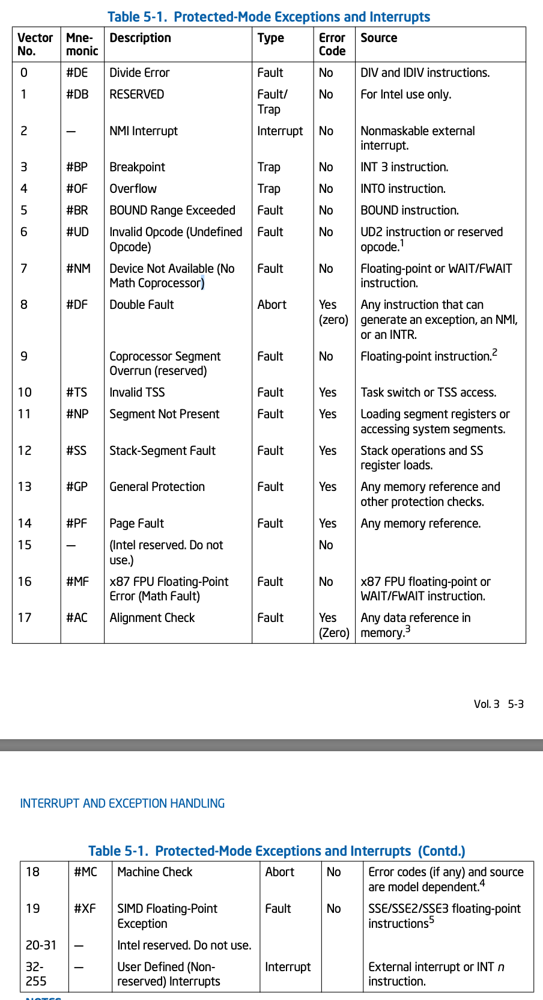
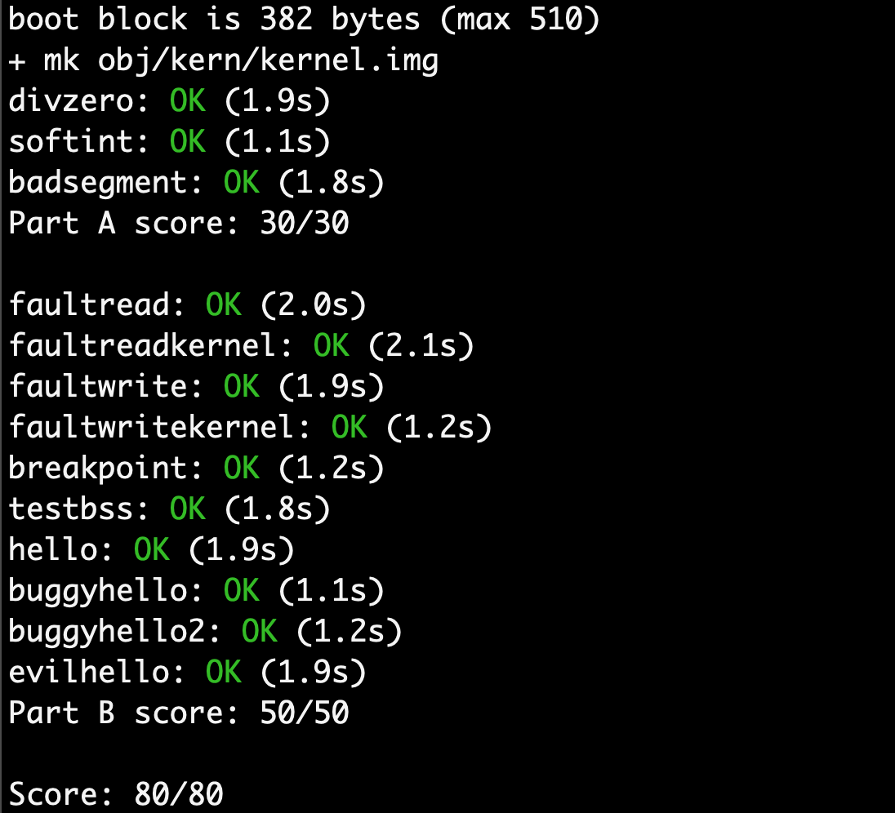

<!DOCTYPE html>
<html lang="zh-CN">
<head>
  <meta charset="UTF-8">
<meta name="viewport" content="width=device-width, initial-scale=1, maximum-scale=2">
<meta name="theme-color" content="#222">
<meta name="generator" content="Hexo 5.2.0">
  <link rel="apple-touch-icon" sizes="180x180" href="/images/apple-touch-icon-next.png">
  <link rel="icon" type="image/png" sizes="32x32" href="/images/favicon-32x32-next.png">
  <link rel="icon" type="image/png" sizes="16x16" href="/images/favicon-16x16-next.png">
  <link rel="mask-icon" href="/images/logo.svg" color="#222">

<link rel="stylesheet" href="/css/main.css">


<link rel="stylesheet" href="/lib/font-awesome/css/font-awesome.min.css">

<script id="hexo-configurations">
    var NexT = window.NexT || {};
    var CONFIG = {"hostname":"lllllv.github.io","root":"/","scheme":"Muse","version":"7.8.0","exturl":false,"sidebar":{"position":"left","display":"post","padding":18,"offset":12,"onmobile":false},"copycode":{"enable":false,"show_result":false,"style":null},"back2top":{"enable":true,"sidebar":false,"scrollpercent":false},"bookmark":{"enable":false,"color":"#222","save":"auto"},"fancybox":false,"mediumzoom":false,"lazyload":false,"pangu":false,"comments":{"style":"tabs","active":null,"storage":true,"lazyload":false,"nav":null},"algolia":{"hits":{"per_page":10},"labels":{"input_placeholder":"Search for Posts","hits_empty":"We didn't find any results for the search: ${query}","hits_stats":"${hits} results found in ${time} ms"}},"localsearch":{"enable":false,"trigger":"auto","top_n_per_article":1,"unescape":false,"preload":false},"motion":{"enable":true,"async":false,"transition":{"post_block":"fadeIn","post_header":"slideDownIn","post_body":"slideDownIn","coll_header":"slideLeftIn","sidebar":"slideUpIn"}}};
  </script>

  <meta name="description" content="MIT 6.828 Lab3">
<meta property="og:type" content="article">
<meta property="og:title" content="lab3:User Environments">
<meta property="og:url" content="https://lllllv.github.io/2020/11/05/lab3-User-Environments/index.html">
<meta property="og:site_name" content="Lv的杂货铺">
<meta property="og:description" content="MIT 6.828 Lab3">
<meta property="og:locale" content="zh_CN">
<meta property="og:image" content="https://lllllv.github.io/2020/11/05/lab3-User-Environments/b.png">
<meta property="og:image" content="https://lllllv.github.io/2020/11/05/lab3-User-Environments/a.png">
<meta property="article:published_time" content="2020-11-05T09:56:44.000Z">
<meta property="article:modified_time" content="2020-12-17T12:15:39.058Z">
<meta property="article:author" content="lv">
<meta property="article:tag" content="MIT 6.828">
<meta name="twitter:card" content="summary">
<meta name="twitter:image" content="https://lllllv.github.io/2020/11/05/lab3-User-Environments/b.png">

<link rel="canonical" href="https://lllllv.github.io/2020/11/05/lab3-User-Environments/">


<script id="page-configurations">
  // https://hexo.io/docs/variables.html
  CONFIG.page = {
    sidebar: "",
    isHome : false,
    isPost : true,
    lang   : 'zh-CN'
  };
</script>

  <title>lab3:User Environments | Lv的杂货铺</title>
  


  <noscript>
  <style>
  .use-motion .brand,
  .use-motion .menu-item,
  .sidebar-inner,
  .use-motion .post-block,
  .use-motion .pagination,
  .use-motion .comments,
  .use-motion .post-header,
  .use-motion .post-body,
  .use-motion .collection-header { opacity: initial; }

  .use-motion .site-title,
  .use-motion .site-subtitle {
    opacity: initial;
    top: initial;
  }

  .use-motion .logo-line-before i { left: initial; }
  .use-motion .logo-line-after i { right: initial; }
  </style>
</noscript>

<!-- hexo injector head_end start -->
<link rel="stylesheet" href="https://cdn.jsdelivr.net/npm/katex@0.12.0/dist/katex.min.css">

<link rel="stylesheet" href="https://cdn.jsdelivr.net/npm/hexo-math@4.0.0/dist/style.css">
<!-- hexo injector head_end end --></head>

<body itemscope itemtype="http://schema.org/WebPage">
  <div class="container use-motion">
    <div class="headband"></div>

    <header class="header" itemscope itemtype="http://schema.org/WPHeader">
      <div class="header-inner"><div class="site-brand-container">
  <div class="site-nav-toggle">
    <div class="toggle" aria-label="切换导航栏">
      <span class="toggle-line toggle-line-first"></span>
      <span class="toggle-line toggle-line-middle"></span>
      <span class="toggle-line toggle-line-last"></span>
    </div>
  </div>

  <div class="site-meta">

    <a href="/" class="brand" rel="start">
      <span class="logo-line-before"><i></i></span>
      <h1 class="site-title">Lv的杂货铺</h1>
      <span class="logo-line-after"><i></i></span>
    </a>
      <p class="site-subtitle" itemprop="description">我们都是阴沟里的虫子，但总还是得有人仰望星空</p>
  </div>

  <div class="site-nav-right">
    <div class="toggle popup-trigger">
    </div>
  </div>
</div>


<nav class="site-nav">
  <ul id="menu" class="menu">
        <li class="menu-item menu-item-home">

    <a href="/" rel="section"><i class="fa fa-fw fa-home"></i>首页</a>

  </li>
        <li class="menu-item menu-item-tags">

    <a href="/tags/" rel="section"><i class="fa fa-fw fa-tags"></i>标签</a>

  </li>
        <li class="menu-item menu-item-archives">

    <a href="/archives/" rel="section"><i class="fa fa-fw fa-archive"></i>归档</a>

  </li>
  </ul>
</nav>


</div>
    </header>

    
  <div class="back-to-top">
    <i class="fa fa-arrow-up"></i>
    <span>0%</span>
  </div>


    <main class="main">
      <div class="main-inner">
        <div class="content-wrap">
          

          <div class="content post posts-expand">
            

    
  
  
  <article itemscope itemtype="http://schema.org/Article" class="post-block" lang="zh-CN">
    <link itemprop="mainEntityOfPage" href="https://lllllv.github.io/2020/11/05/lab3-User-Environments/">

    <span hidden itemprop="author" itemscope itemtype="http://schema.org/Person">
      <meta itemprop="image" content="/images/avatar.gif">
      <meta itemprop="name" content="lv">
      <meta itemprop="description" content="">
    </span>

    <span hidden itemprop="publisher" itemscope itemtype="http://schema.org/Organization">
      <meta itemprop="name" content="Lv的杂货铺">
    </span>
      <header class="post-header">
        <h1 class="post-title" itemprop="name headline">
          lab3:User Environments
        </h1>

        <div class="post-meta">
            <span class="post-meta-item">
              <span class="post-meta-item-icon">
                <i class="fa fa-calendar-o"></i>
              </span>
              <span class="post-meta-item-text">发表于</span>

              <time title="创建时间：2020-11-05 17:56:44" itemprop="dateCreated datePublished" datetime="2020-11-05T17:56:44+08:00">2020-11-05</time>
            </span>
              <span class="post-meta-item">
                <span class="post-meta-item-icon">
                  <i class="fa fa-calendar-check-o"></i>
                </span>
                <span class="post-meta-item-text">更新于</span>
                <time title="修改时间：2020-12-17 20:15:39" itemprop="dateModified" datetime="2020-12-17T20:15:39+08:00">2020-12-17</time>
              </span>

          
            <div class="post-description">MIT 6.828 Lab3</div>

        </div>
      </header>

    
    
    
    <div class="post-body" itemprop="articleBody">

      
        <h2 id="Part-A-User-Environments-and-Exception-Handling"><a href="#Part-A-User-Environments-and-Exception-Handling" class="headerlink" title="Part A: User Environments and Exception Handling"></a>Part A: User Environments and Exception Handling</h2><p>在这个lab中，“环境”事实上等同于“进程”的概念，但这里为了强调在JOS中的环境和UNIX中的进程的实现以及接口还是有些区别的，所以统一使用“环境”一词。</p>
<h3 id="Exercise-1"><a href="#Exercise-1" class="headerlink" title="Exercise 1"></a>Exercise 1</h3><p>在exercise 1中，要求分配一个<code>envs</code>数组，用于保存进程的上下文信息，并将其映射到虚拟地址空间中的<code>UENVS</code>处。这个工作非常简单，对着上一个实验中的照猫画虎就行了，代码如下</p>
<figure class="highlight c"><table><tr><td class="gutter"><pre><span class="line">1</span><br><span class="line">2</span><br></pre></td><td class="code"><pre><span class="line">envs = (struct Env*)boot_alloc(NENV * <span class="keyword">sizeof</span>(struct Env));</span><br><span class="line"><span class="built_in">memset</span>(envs, <span class="number">0</span>, NENV * <span class="keyword">sizeof</span>(struct Env));</span><br></pre></td></tr></table></figure>

<p>在分配了空间之后，在pmap.c中建立虚拟内存之后的部分加入将其映射到<code>UENVS</code>处的代码</p>
<figure class="highlight c"><table><tr><td class="gutter"><pre><span class="line">1</span><br></pre></td><td class="code"><pre><span class="line">boot_map_region(kern_pgdir, UENVS, NENV * <span class="keyword">sizeof</span>(struct Env), PADDR(envs), PTE_U | PTE_P);</span><br></pre></td></tr></table></figure>

<p>接下来，开始着手创建用户运行环境。由于到现在为止还没有一个文件系统，因此这里先是使用了一个替代方案，在编译的时候，用户程序的ELF镜像便已经被链接到了内核中，相当于，系统运行时用户程序的ELF镜像就已经在内存中了。如果要加载一个用户程序，只需要根据ELF文件把程序的内容加载到相应的用户地址空间，而不必考虑怎么把ELF文件从磁盘加载到内存。</p>
<h3 id="Exercise-2"><a href="#Exercise-2" class="headerlink" title="Exercise 2"></a>Exercise 2</h3><p>在exercise 2中，需要完成几个函数。</p>
<p><code>env_init()</code>初始化上面分配的<code>envs</code>数组以及<code>env_free_list</code>指针。</p>
<figure class="highlight c"><table><tr><td class="gutter"><pre><span class="line">1</span><br><span class="line">2</span><br><span class="line">3</span><br><span class="line">4</span><br><span class="line">5</span><br><span class="line">6</span><br><span class="line">7</span><br><span class="line">8</span><br><span class="line">9</span><br><span class="line">10</span><br><span class="line">11</span><br><span class="line">12</span><br><span class="line">13</span><br></pre></td><td class="code"><pre><span class="line">	<span class="comment">// LAB 3: Your code here.</span></span><br><span class="line">	</span><br><span class="line"><span class="keyword">int</span> i = <span class="number">0</span>;</span><br><span class="line"><span class="keyword">for</span>(; i &lt; NENV - <span class="number">1</span>; i++)</span><br><span class="line">&#123;</span><br><span class="line">	envs[i].env_status = ENV_FREE;</span><br><span class="line">	envs[i].env_id = <span class="number">0</span>;</span><br><span class="line">	envs[i].env_link = &amp;envs[i+<span class="number">1</span>];</span><br><span class="line">&#125;</span><br><span class="line"></span><br><span class="line">envs[i].env_status = ENV_FREE;</span><br><span class="line">envs[i].env_link = <span class="literal">NULL</span>;</span><br><span class="line">env_free_list = envs;</span><br></pre></td></tr></table></figure>

<p>之后，<code>env_init()</code>调用<code>env_init_percpu()</code>来配置段的特权级。事实上，段机制在这里的主要用途就是标示特权级，所以可以看到，GDT表的段的base都是0，limit都是最大值。</p>
<p>然后是<code>env_setup_vm()</code>，用于初始化一个环境的地址空间，这需要分配一个物理页来作为这个环境的页目录表并初始化。所有环境在UTOP以上的地址空间的内容都是相同的，所以直接照搬内核的相应条目就行来，而UTOP以下对应的条目应当都为空；此外，因为当环境被销毁之后，相应的页也应当被释放，而环境的页目录表的对应物理页的<code>pp_ref</code>应当加1来保证以后能够成功地释放掉。整个代码为：</p>
<figure class="highlight c"><table><tr><td class="gutter"><pre><span class="line">1</span><br><span class="line">2</span><br><span class="line">3</span><br><span class="line">4</span><br><span class="line">5</span><br><span class="line">6</span><br><span class="line">7</span><br><span class="line">8</span><br><span class="line">9</span><br></pre></td><td class="code"><pre><span class="line">	<span class="comment">// LAB 3: Your code here.</span></span><br><span class="line"></span><br><span class="line"><span class="keyword">pde_t</span>* env_pgdir = page2kva(p);</span><br><span class="line">e-&gt;env_pgdir = env_pgdir;<span class="built_in">memset</span>(env_pgdir, <span class="number">0</span>, PGSIZE);</span><br><span class="line"></span><br><span class="line"><span class="keyword">for</span>(<span class="keyword">int</span> i=PDX(UTOP);i&lt;NPDENTRIES;i++)</span><br><span class="line">	e-&gt;env_pgdir[i]=kern_pgdir[i];</span><br><span class="line"></span><br><span class="line">p-&gt;pp_ref++;</span><br></pre></td></tr></table></figure>

<p>下一个是<code>region_alloc()</code>，给出一个虚拟地址va及长度len，给这一段虚拟地址分配足够的物理页并建立物理页和虚拟页的映射。需要注意的是，函数的参数，虚拟地址，可能不是页对齐的，也就是说，[va, va+len)，可能开始于一个页的后半部分，而结束于最后一个页的前半部分，那么，考虑到这种情况，需要使用<code>ROUNDDOWN</code>和<code>ROUNDUP</code>宏来辅助了。除此之外，代码还是比较简单的。</p>
<figure class="highlight c"><table><tr><td class="gutter"><pre><span class="line">1</span><br><span class="line">2</span><br><span class="line">3</span><br><span class="line">4</span><br><span class="line">5</span><br><span class="line">6</span><br><span class="line">7</span><br><span class="line">8</span><br><span class="line">9</span><br><span class="line">10</span><br><span class="line">11</span><br><span class="line">12</span><br></pre></td><td class="code"><pre><span class="line"><span class="keyword">void</span>* start = (<span class="keyword">void</span> *)ROUNDDOWN((<span class="keyword">uint32_t</span>)va, PGSIZE);</span><br><span class="line"><span class="keyword">void</span>* end = (<span class="keyword">void</span> *)ROUNDUP((<span class="keyword">uint32_t</span>)va + len, PGSIZE);</span><br><span class="line"><span class="keyword">for</span>(<span class="keyword">void</span>* i = start; i &lt; end; i += PGSIZE)</span><br><span class="line">&#123;</span><br><span class="line">	<span class="class"><span class="keyword">struct</span> <span class="title">PageInfo</span> *<span class="title">p</span> = <span class="title">page_alloc</span>(0);</span></span><br><span class="line">	<span class="keyword">if</span>(!p)</span><br><span class="line">		panic(<span class="string">&quot;region_alloc: page_alloc error!\n&quot;</span>);</span><br><span class="line"></span><br><span class="line">	<span class="keyword">int</span> r = page_insert(e-&gt;env_pgdir, p, i, PTE_W | PTE_U);</span><br><span class="line">	<span class="keyword">if</span>(r) </span><br><span class="line">		panic(<span class="string">&quot;region_alloc: page_insert error %e\n&quot;</span>, r);</span><br><span class="line">&#125;</span><br></pre></td></tr></table></figure>

<p>下一个<code>load_icode()</code>用于把用户程序的ELF镜像加载到相应的地址。这部分跟之前lab的bootloader加载内核到正确地址非常像，唯一需要注意的就是，把用户程序加载到相应的地址，当然是让用户进程使用的，那么整个过程的使用的当然是用户环境的地址空间，而现在运行在内核态，CR3寄存器中放的是kern_pgdir，所以就有必要将其换成用户环境的env_pgdir，然后之后再换回来就行了。而之前也提到了，在UTOP以上所有环境的地址映射都是一样的，都照搬的kern_pgdir，这也就保证了把CR3寄存器的内容换成env_pgdir后，程序也能够正确运行。代码如下：</p>
<figure class="highlight c"><table><tr><td class="gutter"><pre><span class="line">1</span><br><span class="line">2</span><br><span class="line">3</span><br><span class="line">4</span><br><span class="line">5</span><br><span class="line">6</span><br><span class="line">7</span><br><span class="line">8</span><br><span class="line">9</span><br><span class="line">10</span><br><span class="line">11</span><br><span class="line">12</span><br><span class="line">13</span><br><span class="line">14</span><br><span class="line">15</span><br><span class="line">16</span><br><span class="line">17</span><br><span class="line">18</span><br><span class="line">19</span><br><span class="line">20</span><br><span class="line">21</span><br><span class="line">22</span><br><span class="line">23</span><br><span class="line">24</span><br><span class="line">25</span><br><span class="line">26</span><br><span class="line">27</span><br><span class="line">28</span><br><span class="line">29</span><br><span class="line">30</span><br><span class="line">31</span><br><span class="line">32</span><br><span class="line">33</span><br><span class="line">34</span><br></pre></td><td class="code"><pre><span class="line">	<span class="comment">// LAB 3: Your code here.</span></span><br><span class="line"></span><br><span class="line"><span class="class"><span class="keyword">struct</span> <span class="title">Elf</span>* <span class="title">ELFHDR</span> = (<span class="title">struct</span> <span class="title">Elf</span>*)<span class="title">binary</span>;</span></span><br><span class="line"><span class="class"><span class="keyword">struct</span> <span class="title">Proghdr</span> *<span class="title">ph</span>, *<span class="title">eph</span>;</span></span><br><span class="line">ph = (struct Proghdr *) ((<span class="keyword">uint8_t</span> *) ELFHDR + ELFHDR-&gt;e_phoff);</span><br><span class="line">eph = ph + ELFHDR-&gt;e_phnum;</span><br><span class="line"></span><br><span class="line">lcr3(PADDR(e-&gt;env_pgdir));</span><br><span class="line"><span class="keyword">for</span> (; ph &lt; eph; ph++)</span><br><span class="line">&#123;</span><br><span class="line">	<span class="keyword">if</span>(ph-&gt;p_type == ELF_PROG_LOAD)</span><br><span class="line">	&#123;</span><br><span class="line">		region_alloc(e, (<span class="keyword">void</span>*)ph-&gt;p_va, ph-&gt;p_memsz);</span><br><span class="line">		<span class="built_in">memcpy</span>((<span class="keyword">void</span>*)ph-&gt;p_va, (<span class="keyword">void</span>*)((<span class="keyword">uint32_t</span>)binary + ph-&gt;p_offset), ph-&gt;p_filesz);</span><br><span class="line">		<span class="built_in">memset</span>((<span class="keyword">void</span>*)(ph-&gt;p_va + ph-&gt;p_filesz), <span class="number">0</span>, ph-&gt;p_memsz - ph-&gt;p_filesz);</span><br><span class="line">	&#125;</span><br><span class="line">&#125;</span><br><span class="line">lcr3(PADDR(kern_pgdir));</span><br><span class="line"></span><br><span class="line">e-&gt;env_tf.tf_eip = ELFHDR-&gt;e_entry;</span><br><span class="line"></span><br><span class="line"></span><br><span class="line">	<span class="comment">// Now map one page for the program&#x27;s initial stack</span></span><br><span class="line">	<span class="comment">// at virtual address USTACKTOP - PGSIZE.</span></span><br><span class="line"></span><br><span class="line">	<span class="comment">// LAB 3: Your code here.</span></span><br><span class="line"></span><br><span class="line"><span class="class"><span class="keyword">struct</span> <span class="title">PageInfo</span>* <span class="title">p</span> = <span class="title">page_alloc</span>(0);</span></span><br><span class="line"><span class="keyword">if</span>(!p)</span><br><span class="line">	panic(<span class="string">&quot;load_icode: page_alloc error!\n&quot;</span>);</span><br><span class="line"></span><br><span class="line"><span class="keyword">int</span> r = page_insert(e-&gt;env_pgdir, p, (<span class="keyword">void</span>*)(USTACKTOP - PGSIZE), PTE_U | PTE_W);</span><br><span class="line"><span class="keyword">if</span>(r)</span><br><span class="line">	panic(<span class="string">&quot;load_icode: page_insert error %e\n&quot;</span>, r);</span><br></pre></td></tr></table></figure>

<p><code>env_create()</code>非常简单，直接上代码：</p>
<figure class="highlight c"><table><tr><td class="gutter"><pre><span class="line">1</span><br><span class="line">2</span><br><span class="line">3</span><br><span class="line">4</span><br><span class="line">5</span><br></pre></td><td class="code"><pre><span class="line">	<span class="comment">// LAB 3: Your code here.</span></span><br><span class="line"><span class="class"><span class="keyword">struct</span> <span class="title">Env</span>* <span class="title">env</span>;</span></span><br><span class="line">env_alloc(&amp;env, <span class="number">0</span>);</span><br><span class="line">load_icode(env, binary);</span><br><span class="line">env-&gt;env_type = type;</span><br></pre></td></tr></table></figure>

<p>同样，<code>env_run()</code>也非常简单，代码如下：</p>
<figure class="highlight c"><table><tr><td class="gutter"><pre><span class="line">1</span><br><span class="line">2</span><br><span class="line">3</span><br><span class="line">4</span><br><span class="line">5</span><br><span class="line">6</span><br><span class="line">7</span><br><span class="line">8</span><br><span class="line">9</span><br><span class="line">10</span><br><span class="line">11</span><br><span class="line">12</span><br><span class="line">13</span><br><span class="line">14</span><br><span class="line">15</span><br><span class="line">16</span><br></pre></td><td class="code"><pre><span class="line">    <span class="comment">// LAB 3: Your code here.</span></span><br><span class="line"></span><br><span class="line"><span class="keyword">if</span>(e-&gt;env_status == ENV_RUNNABLE)</span><br><span class="line">&#123;</span><br><span class="line">	<span class="keyword">if</span>(curenv &amp;&amp; curenv-&gt;env_status == ENV_RUNNING)</span><br><span class="line">		curenv-&gt;env_status = ENV_RUNNABLE;</span><br><span class="line"></span><br><span class="line">	curenv = e;</span><br><span class="line">	curenv-&gt;env_status = ENV_RUNNING;</span><br><span class="line">	curenv-&gt;env_runs++;</span><br><span class="line">	lcr3(PADDR(e-&gt;env_pgdir));</span><br><span class="line">&#125; </span><br><span class="line"></span><br><span class="line">env_pop_tf(&amp;e-&gt;env_tf);</span><br><span class="line"></span><br><span class="line">panic(<span class="string">&quot;env_run not yet implemented&quot;</span>);</span><br></pre></td></tr></table></figure>

<p>然后，开始着手进行中断和异常处理。当一个中断或异常发生的时候，CPU会把当前的一些上下文信息，如一些寄存器到值保存到一个栈中，然后跳转到相应到中断处理程序进行处理，处理完后然后再把这些恢复，而这个栈显然不是一个随便的地方。TSS指定了当发生中断或异常的时候要转到的栈，CPU首先把esp寄存器到值切换到TSS指定的，然后才能进行中断现场保护。TSS的初始化lab事先已经做好了，事实上就是地址空间的内核栈。而“跳转到相应到中断处理程序进行处理”，是根据中断号，作为索引查IDT表，得到相应中断处理程序的CS：IP，跳转到相应地址。</p>
<h3 id="Exercise-3"><a href="#Exercise-3" class="headerlink" title="Exercise 3"></a>Exercise 3</h3><p>exercise 3要求实现类似上述的机制。在中断或异常发生的时候，<strong>CPU</strong>会自己将esp转到TSS指定的栈，压入一些寄存器的值，根据中断号的不同，有些压入一个error code，而有些则不压入error code。题目中给出了一些提示了，每个IDT表项对应的中断处理程序，应当根据不同的情况压入一些额外的内容，来保证最后栈中的内容刚好构成了一个<code>struct Trapframe</code>结构体，当作<code>trap()</code>的参数，最后<code>call trap</code>（trap.c中定义）。</p>
<p>有些中断号CPU没有压入error code，而有些压入了，而<code>struct Trapframe</code>中是有error code的字段的，所以我们要把这些没压入error code的情况，补一个随便的值占位，然后再参考<code>struct Trapframe</code>的定义来压入些寄存器值，然后，栈中的内容从低地址向高地址看就是一个完整的<code>struct Trapframe</code>了。而<code>trap()</code>的参数是<code>struct Trapframe*</code>，是一个指针，那么，只需要在最后，把esp压栈，<code>call trap</code>，就能够正确地调用<code>trap()</code>了！</p>
<p>总的来说，中断处理程序的工作是在栈中构造出一个<code>struct Trapframe</code>，然后<code>call trap</code>。而具体的中断处理的工作，就交给<code>trap()</code>完成了。在<code>trap()</code>的最后，中断/异常处理完毕，它将会使用<code>env_run(curenv)</code>来跳转到用户进程运行。</p>
<p>在trapentry.S中，已经给出来了两个辅助的宏来减少一些任务量。我们需要在C文件中声明一系列中断处理函数（便于在<code>trap_init()</code>中引用），然后在trapentry.S中使用这些宏来实际“实现”这些函数————以汇编的方式，然后用另外的宏在<code>trap_init()</code>中来初始化IDT的相应内容。</p>
<p>trapentry.S中的内容：</p>
<figure class="highlight x86asm"><table><tr><td class="gutter"><pre><span class="line">1</span><br><span class="line">2</span><br><span class="line">3</span><br><span class="line">4</span><br><span class="line">5</span><br><span class="line">6</span><br><span class="line">7</span><br><span class="line">8</span><br><span class="line">9</span><br><span class="line">10</span><br><span class="line">11</span><br><span class="line">12</span><br><span class="line">13</span><br><span class="line">14</span><br><span class="line">15</span><br><span class="line">16</span><br><span class="line">17</span><br><span class="line">18</span><br><span class="line">19</span><br><span class="line">20</span><br><span class="line">21</span><br><span class="line">22</span><br><span class="line">23</span><br><span class="line">24</span><br><span class="line">25</span><br><span class="line">26</span><br><span class="line">27</span><br><span class="line">28</span><br><span class="line">29</span><br><span class="line">30</span><br><span class="line">31</span><br><span class="line">32</span><br><span class="line">33</span><br><span class="line">34</span><br><span class="line">35</span><br><span class="line">36</span><br><span class="line">37</span><br><span class="line">38</span><br><span class="line">39</span><br><span class="line">40</span><br><span class="line">41</span><br><span class="line">42</span><br></pre></td><td class="code"><pre><span class="line">/*</span><br><span class="line"> * Lab <span class="number">3</span>: Your code here for generating entry points for the different traps.</span><br><span class="line"> */</span><br><span class="line"></span><br><span class="line">TRAPHANDLER_NOEC(handler0, T_DIVIDE)</span><br><span class="line">TRAPHANDLER_NOEC(handler1, T_DEBUG)</span><br><span class="line">TRAPHANDLER_NOEC(handler2, T_NMI)</span><br><span class="line">TRAPHANDLER_NOEC(handler3, T_BRKPT)</span><br><span class="line">TRAPHANDLER_NOEC(handler4, T_OFLOW)</span><br><span class="line">TRAPHANDLER_NOEC(handler5, T_BOUND)</span><br><span class="line">TRAPHANDLER_NOEC(handler6, T_ILLOP)</span><br><span class="line">TRAPHANDLER_NOEC(handler7, T_DEVICE)</span><br><span class="line"></span><br><span class="line">TRAPHANDLER(handler8, T_DBLFLT)</span><br><span class="line"></span><br><span class="line">TRAPHANDLER(handler10, T_TSS)</span><br><span class="line">TRAPHANDLER(handler11, T_SEGNP)</span><br><span class="line">TRAPHANDLER(handler12, T_STACK)</span><br><span class="line">TRAPHANDLER(handler13, T_GPFLT)</span><br><span class="line">TRAPHANDLER(handler14, T_PGFLT)</span><br><span class="line"></span><br><span class="line">TRAPHANDLER_NOEC(handler16, T_FPERR)</span><br><span class="line"></span><br><span class="line">TRAPHANDLER(handler17, T_ALIGN)</span><br><span class="line"></span><br><span class="line">TRAPHANDLER_NOEC(handler18, T_MCHK)</span><br><span class="line">TRAPHANDLER_NOEC(handler19, T_SIMDERR)</span><br><span class="line"></span><br><span class="line">TRAPHANDLER_NOEC(handler48, T_SYSCALL)</span><br><span class="line"></span><br><span class="line">/*</span><br><span class="line"> * Lab <span class="number">3</span>: Your code here for _alltraps</span><br><span class="line"> */</span><br><span class="line"><span class="symbol">_alltraps:</span></span><br><span class="line">	pushl	%ds </span><br><span class="line">	pushl	%es </span><br><span class="line">	pushal</span><br><span class="line">	<span class="keyword">mov</span>		$GD_KD, %ax</span><br><span class="line">	<span class="keyword">mov</span>		%ax, %ds </span><br><span class="line">	<span class="keyword">mov</span>		%ax, %es</span><br><span class="line">	pushl	%esp </span><br><span class="line">	<span class="keyword">call</span>	trap</span><br></pre></td></tr></table></figure>


<p>根据前面给出的<a target="_blank" rel="noopener" href="https://pdos.csail.mit.edu/6.828/2018/readings/ia32/IA32-3A.pdf">资料</a>，除了中断号为2的，以及系统调用以外，其余的都是属于“exception”（fault、trap、abort都属于exception）</p>
<p></p>
<p>而根据mmu.h中关于<code>SETGATE</code>宏的注释：</p>
<blockquote>
<ul>
<li>istrap: 1 for a trap (= exception) gate, 0 for an interrupt gate.</li>
</ul>
</blockquote>
<p>事实上，经过测试，<code>istrap</code>字段无论设置为0还是为1并不会影响评分脚本的结果。</p>
<p>从常理来看，虽然不影响评分，但显然并不合适。如果设为0的话，在进入相应的中断处理程序中的时候，会屏蔽中断直到处理完毕，对于一些exception的处理这明显不合适。StackOverflow上<a target="_blank" rel="noopener" href="https://stackoverflow.com/questions/3425085/the-difference-between-call-gate-interrupt-gate-trap-gate">这个问题</a>的第二个回答我觉得讲的不错，可以参考一下。</p>
<blockquote>
<p>Similar way, gate of any type in IDT can be called in software. The reason for the using trap gates for system call and exceptions is simple. No any reasons to disable interrupts. Interrupt disabling is a bad thing, because it increases interrupt handling latencies and increase probability of interrupt lost. Due to this no one won’t disable them without any serious reason on the hands.</p>
</blockquote>
<p><strong>但是</strong>，虽然在这里并不重要，但在后面的lab4中，提到了:</p>
<blockquote>
<p>In JOS, we make a key simplification compared to xv6 Unix. External device interrupts are always disabled when in the kernel (and, like xv6, enabled when in user space). External interrupts are controlled by the FL_IF flag bit of the %eflags register (see inc/mmu.h). When this bit is set, external interrupts are enabled. While the bit can be modified in several ways, because of our simplification, we will handle it solely through the process of saving and restoring %eflags register as we enter and leave user mode.</p>
</blockquote>
<p>也就是说，通常不应该设为0的，但是在JOS中，处于内核态时屏蔽所有外部中断，也就是IF flag为0，那么，<code>istrap</code>就需要设置为0了。</p>
<p>那么，接下来在<code>trap_init()</code>中要添加的内容就是：</p>
<figure class="highlight c"><table><tr><td class="gutter"><pre><span class="line">1</span><br><span class="line">2</span><br><span class="line">3</span><br><span class="line">4</span><br><span class="line">5</span><br><span class="line">6</span><br><span class="line">7</span><br><span class="line">8</span><br><span class="line">9</span><br><span class="line">10</span><br><span class="line">11</span><br><span class="line">12</span><br><span class="line">13</span><br><span class="line">14</span><br><span class="line">15</span><br><span class="line">16</span><br><span class="line">17</span><br><span class="line">18</span><br><span class="line">19</span><br><span class="line">20</span><br><span class="line">21</span><br><span class="line">22</span><br><span class="line">23</span><br><span class="line">24</span><br></pre></td><td class="code"><pre><span class="line">    <span class="comment">// LAB 3: Your code here.</span></span><br><span class="line"></span><br><span class="line">SETGATE(idt[<span class="number">0</span>], <span class="number">0</span>, GD_KT, &amp;handler0, <span class="number">0</span>)</span><br><span class="line">SETGATE(idt[<span class="number">1</span>], <span class="number">0</span>, GD_KT, &amp;handler1, <span class="number">0</span>)</span><br><span class="line">SETGATE(idt[<span class="number">2</span>], <span class="number">0</span>, GD_KT, &amp;handler2, <span class="number">0</span>)</span><br><span class="line">SETGATE(idt[<span class="number">3</span>], <span class="number">0</span>, GD_KT, &amp;handler3, <span class="number">3</span>)</span><br><span class="line">SETGATE(idt[<span class="number">4</span>], <span class="number">0</span>, GD_KT, &amp;handler4, <span class="number">0</span>)</span><br><span class="line">SETGATE(idt[<span class="number">5</span>], <span class="number">0</span>, GD_KT, &amp;handler5, <span class="number">0</span>)</span><br><span class="line">SETGATE(idt[<span class="number">6</span>], <span class="number">0</span>, GD_KT, &amp;handler6, <span class="number">0</span>)</span><br><span class="line">SETGATE(idt[<span class="number">7</span>], <span class="number">0</span>, GD_KT, &amp;handler7, <span class="number">0</span>)</span><br><span class="line">SETGATE(idt[<span class="number">8</span>], <span class="number">0</span>, GD_KT, &amp;handler8, <span class="number">0</span>)</span><br><span class="line"></span><br><span class="line">SETGATE(idt[<span class="number">10</span>], <span class="number">0</span>, GD_KT, &amp;handler10, <span class="number">0</span>)</span><br><span class="line">SETGATE(idt[<span class="number">11</span>], <span class="number">0</span>, GD_KT, &amp;handler11, <span class="number">0</span>)</span><br><span class="line">SETGATE(idt[<span class="number">12</span>], <span class="number">0</span>, GD_KT, &amp;handler12, <span class="number">0</span>)</span><br><span class="line">SETGATE(idt[<span class="number">13</span>], <span class="number">0</span>, GD_KT, &amp;handler13, <span class="number">0</span>)</span><br><span class="line">SETGATE(idt[<span class="number">14</span>], <span class="number">0</span>, GD_KT, &amp;handler14, <span class="number">0</span>)</span><br><span class="line">	</span><br><span class="line">SETGATE(idt[<span class="number">16</span>], <span class="number">0</span>, GD_KT, &amp;handler16, <span class="number">0</span>)</span><br><span class="line">SETGATE(idt[<span class="number">17</span>], <span class="number">0</span>, GD_KT, &amp;handler17, <span class="number">0</span>)</span><br><span class="line">SETGATE(idt[<span class="number">18</span>], <span class="number">0</span>, GD_KT, &amp;handler18, <span class="number">0</span>)</span><br><span class="line">SETGATE(idt[<span class="number">19</span>], <span class="number">0</span>, GD_KT, &amp;handler19, <span class="number">0</span>)</span><br><span class="line"></span><br><span class="line">SETGATE(idt[<span class="number">48</span>], <span class="number">0</span>, GD_KT, &amp;handler48, <span class="number">3</span>)</span><br></pre></td></tr></table></figure>


<p>此外，声明这些中断处理函数。理论上在任意合理的地方都行，这里选择在inc/trap.h中声明：</p>
<figure class="highlight c"><table><tr><td class="gutter"><pre><span class="line">1</span><br><span class="line">2</span><br><span class="line">3</span><br><span class="line">4</span><br><span class="line">5</span><br><span class="line">6</span><br><span class="line">7</span><br><span class="line">8</span><br><span class="line">9</span><br><span class="line">10</span><br><span class="line">11</span><br><span class="line">12</span><br><span class="line">13</span><br><span class="line">14</span><br><span class="line">15</span><br><span class="line">16</span><br><span class="line">17</span><br><span class="line">18</span><br><span class="line">19</span><br><span class="line">20</span><br><span class="line">21</span><br><span class="line">22</span><br></pre></td><td class="code"><pre><span class="line"><span class="function"><span class="keyword">void</span> <span class="title">handler0</span><span class="params">()</span></span>;</span><br><span class="line"><span class="function"><span class="keyword">void</span> <span class="title">handler1</span><span class="params">()</span></span>;</span><br><span class="line"><span class="function"><span class="keyword">void</span> <span class="title">handler2</span><span class="params">()</span></span>;</span><br><span class="line"><span class="function"><span class="keyword">void</span> <span class="title">handler3</span><span class="params">()</span></span>;</span><br><span class="line"><span class="function"><span class="keyword">void</span> <span class="title">handler4</span><span class="params">()</span></span>;</span><br><span class="line"><span class="function"><span class="keyword">void</span> <span class="title">handler5</span><span class="params">()</span></span>;</span><br><span class="line"><span class="function"><span class="keyword">void</span> <span class="title">handler6</span><span class="params">()</span></span>;</span><br><span class="line"><span class="function"><span class="keyword">void</span> <span class="title">handler7</span><span class="params">()</span></span>;</span><br><span class="line"><span class="function"><span class="keyword">void</span> <span class="title">handler8</span><span class="params">()</span></span>;</span><br><span class="line"><span class="function"><span class="keyword">void</span> <span class="title">handler9</span><span class="params">()</span></span>;</span><br><span class="line"><span class="function"><span class="keyword">void</span> <span class="title">handler10</span><span class="params">()</span></span>;</span><br><span class="line"><span class="function"><span class="keyword">void</span> <span class="title">handler11</span><span class="params">()</span></span>;</span><br><span class="line"><span class="function"><span class="keyword">void</span> <span class="title">handler12</span><span class="params">()</span></span>;</span><br><span class="line"><span class="function"><span class="keyword">void</span> <span class="title">handler13</span><span class="params">()</span></span>;</span><br><span class="line"><span class="function"><span class="keyword">void</span> <span class="title">handler14</span><span class="params">()</span></span>;</span><br><span class="line"></span><br><span class="line"><span class="function"><span class="keyword">void</span> <span class="title">handler16</span><span class="params">()</span></span>;</span><br><span class="line"><span class="function"><span class="keyword">void</span> <span class="title">handler17</span><span class="params">()</span></span>;</span><br><span class="line"><span class="function"><span class="keyword">void</span> <span class="title">handler18</span><span class="params">()</span></span>;</span><br><span class="line"><span class="function"><span class="keyword">void</span> <span class="title">handler19</span><span class="params">()</span></span>;</span><br><span class="line"></span><br><span class="line"><span class="function"><span class="keyword">void</span> <span class="title">handler48</span><span class="params">()</span></span>;</span><br></pre></td></tr></table></figure>

<p>需要注意的是，14号中断（page fault）的设置<code>SETGATE(idt[14], 0, GD_KT, &amp;handler14, 0)</code>，dpl字段设置是0，意义是如果想要通过软中断触发，需要处于特权级0（内核态）。事实上，page fault无论如何也不应该允许用户进程使用<code>int</code>指令触发。</p>
<h2 id="Part-B-Page-Faults-Breakpoints-Exceptions-and-System-Calls"><a href="#Part-B-Page-Faults-Breakpoints-Exceptions-and-System-Calls" class="headerlink" title="Part B: Page Faults, Breakpoints Exceptions, and System Calls"></a>Part B: Page Faults, Breakpoints Exceptions, and System Calls</h2><h3 id="对trap-的分析"><a href="#对trap-的分析" class="headerlink" title="对trap()的分析"></a>对<code>trap()</code>的分析</h3><p>在进入函数之后，首先，使用内联汇编重置DF，因为之前的用户环境可能设置了DF，然后，确保中断被屏蔽，接着，根据<code>tf-&gt;tf_cs</code>字段判断是由用户态进入到内核态的还是之前就处在内核态：有时，在进行中断处理时会遇到异常，这就造成了嵌套的异常。程序只需要在由用户态进入内核态的这种情况中才需要把当前环境的<code>struct Trapframe*</code>保存到环境的<code>env_tf</code>字段，这样，当所有的中断/异常都被处理完毕后，就能够正确地退回原来的用户进程了。然后，调用<code>trap_dispatch()</code>分派中断/异常处理，最后，通过<code>env_run(curenv)</code>退回之前的用户进程。</p>
<h3 id="Exercise-5、6、7"><a href="#Exercise-5、6、7" class="headerlink" title="Exercise 5、6、7"></a>Exercise 5、6、7</h3><p>这三个exercise都非常简单，于是放在一起说了。要做的就是根据传入的<code>struct Trapframe*</code>判断中断/异常类型，然后调用相应的处理函数进行处理。代码如下：</p>
<figure class="highlight c"><table><tr><td class="gutter"><pre><span class="line">1</span><br><span class="line">2</span><br><span class="line">3</span><br><span class="line">4</span><br><span class="line">5</span><br><span class="line">6</span><br><span class="line">7</span><br><span class="line">8</span><br><span class="line">9</span><br><span class="line">10</span><br><span class="line">11</span><br><span class="line">12</span><br><span class="line">13</span><br><span class="line">14</span><br><span class="line">15</span><br><span class="line">16</span><br></pre></td><td class="code"><pre><span class="line">    <span class="comment">// LAB 3: Your code here.</span></span><br><span class="line"><span class="keyword">switch</span> (tf-&gt;tf_trapno)</span><br><span class="line">&#123;</span><br><span class="line">	<span class="keyword">case</span> T_PGFLT: </span><br><span class="line">		page_fault_handler(tf);</span><br><span class="line">		<span class="keyword">return</span>;</span><br><span class="line">	<span class="keyword">case</span> T_BRKPT: </span><br><span class="line">		monitor(tf);</span><br><span class="line">		<span class="keyword">return</span>;</span><br><span class="line">	<span class="keyword">case</span> T_SYSCALL: </span><br><span class="line">		tf-&gt;tf_regs.reg_eax = syscall(tf-&gt;tf_regs.reg_eax, tf-&gt;tf_regs.reg_edx, </span><br><span class="line">			tf-&gt;tf_regs.reg_ecx, tf-&gt;tf_regs.reg_ebx, tf-&gt;tf_regs.reg_edi, tf-&gt;tf_regs.reg_esi);</span><br><span class="line">		<span class="keyword">return</span>;</span><br><span class="line">	<span class="keyword">default</span>:</span><br><span class="line">		<span class="keyword">break</span>;</span><br><span class="line">	&#125;</span><br></pre></td></tr></table></figure>

<h3 id="Exercise-8"><a href="#Exercise-8" class="headerlink" title="Exercise 8"></a>Exercise 8</h3><p>exercise 8要求初始化thisenv，指向当前的环境，代码只有一行：</p>
<figure class="highlight c"><table><tr><td class="gutter"><pre><span class="line">1</span><br><span class="line">2</span><br><span class="line">3</span><br></pre></td><td class="code"><pre><span class="line">	<span class="comment">// LAB 3: Your code here.</span></span><br><span class="line"></span><br><span class="line">thisenv = &amp;envs[ENVX(sys_getenvid())];</span><br></pre></td></tr></table></figure>

<h3 id="Exercise-9"><a href="#Exercise-9" class="headerlink" title="Exercise 9"></a>Exercise 9</h3><p>exercise 9要求完成一部分内存保护机制。首先是，如果在用户态发生了page fault，应当panic。在page fault发生时候处于什么特权级可以通过查看cs的低两位来完成，在<code>page_fault_handler()</code>增加一行：</p>
<figure class="highlight c"><table><tr><td class="gutter"><pre><span class="line">1</span><br><span class="line">2</span><br><span class="line">3</span><br></pre></td><td class="code"><pre><span class="line">	<span class="comment">// LAB 3: Your code here.</span></span><br><span class="line"><span class="keyword">if</span>(!(tf-&gt;tf_cs &amp; <span class="number">3</span>))</span><br><span class="line">	panic(<span class="string">&quot;page fault occurs in kernel mode!\n&quot;</span>);</span><br></pre></td></tr></table></figure>

<p>然后是pmap.c的<code>user_mem_check()</code>。<code>user_mem_check()</code>在<code>user_mem_assert()</code>中被使用到。给定一个环境env，虚拟地址va以及长度len，函数确定[va, va+len)范围内存地址是否可以被用户进程合法访问，如果合法，返回0，否则返回一个负值。</p>
<p>由于内存管理是以页为粒度的，所以不需要一个字节一个字节的比较，按页为单位判断即可，把首个不合法的内存地址存到给定的静态全局变量中。代码如下：</p>
<figure class="highlight c"><table><tr><td class="gutter"><pre><span class="line">1</span><br><span class="line">2</span><br><span class="line">3</span><br><span class="line">4</span><br><span class="line">5</span><br><span class="line">6</span><br><span class="line">7</span><br><span class="line">8</span><br><span class="line">9</span><br><span class="line">10</span><br><span class="line">11</span><br><span class="line">12</span><br><span class="line">13</span><br><span class="line">14</span><br><span class="line">15</span><br><span class="line">16</span><br><span class="line">17</span><br><span class="line">18</span><br><span class="line">19</span><br><span class="line">20</span><br><span class="line">21</span><br></pre></td><td class="code"><pre><span class="line"><span class="comment">// LAB 3: Your code here.</span></span><br><span class="line"><span class="keyword">if</span>((<span class="keyword">uint32_t</span>)va + len &gt; ULIM)</span><br><span class="line">&#123;</span><br><span class="line">	user_mem_check_addr = (<span class="keyword">uint32_t</span>)va;</span><br><span class="line">	<span class="keyword">return</span> -E_FAULT;</span><br><span class="line">&#125;	</span><br><span class="line">		</span><br><span class="line"><span class="keyword">uint32_t</span> lo = ROUNDDOWN((<span class="keyword">uint32_t</span>)va, PGSIZE), hi = ROUNDDOWN((<span class="keyword">uint32_t</span>)va + len - <span class="number">1</span>, PGSIZE);</span><br><span class="line"><span class="keyword">for</span>(<span class="keyword">uint32_t</span> i = lo; i &lt;= hi; i += PGSIZE)</span><br><span class="line">&#123;</span><br><span class="line">	<span class="keyword">if</span>((env-&gt;env_pgdir[PDX(i)] &amp; PTE_U) &amp;&amp; </span><br><span class="line">		((((<span class="keyword">pte_t</span>*)UVPT)[i/PGSIZE]) &amp; PTE_U))</span><br><span class="line">		<span class="keyword">continue</span>;</span><br><span class="line">	<span class="keyword">if</span>(i == lo)</span><br><span class="line">		user_mem_check_addr = (<span class="keyword">uint32_t</span>)va;</span><br><span class="line">	<span class="keyword">else</span></span><br><span class="line">		user_mem_check_addr = i;</span><br><span class="line">	<span class="keyword">return</span> -E_FAULT;</span><br><span class="line">&#125;</span><br><span class="line"></span><br><span class="line"><span class="keyword">return</span> <span class="number">0</span>;</span><br></pre></td></tr></table></figure>

<p>然后，在涉及到内存保护的系统调用中使用<code>user_mem_assert()</code>添加合法性判断。在kern/syscall.c的<code>sys_cputs()</code>添加：</p>
<figure class="highlight c"><table><tr><td class="gutter"><pre><span class="line">1</span><br><span class="line">2</span><br></pre></td><td class="code"><pre><span class="line">	<span class="comment">// LAB 3: Your code here.</span></span><br><span class="line">user_mem_assert(curenv, s, len, PTE_U);</span><br></pre></td></tr></table></figure>


<p>至此，整个lab就算完成了。使用<code>make grade</code>进行评分</p>
<p></p>
<p>（完）</p>

    </div>

    
    
    

      <footer class="post-footer">
          <div class="post-tags">
              <a href="/tags/MIT-6-828/" rel="tag"># MIT 6.828</a>
          </div>

        


        
    <div class="post-nav">
      <div class="post-nav-item">
    <a href="/2020/10/29/lab2-Memory-Management/" rel="prev" title="lab2:Memory Management">
      <i class="fa fa-chevron-left"></i> lab2:Memory Management
    </a></div>
      <div class="post-nav-item">
    <a href="/2020/11/11/%E6%B3%B5%E5%BC%95%E7%90%86/" rel="next" title="泵引理">
      泵引理 <i class="fa fa-chevron-right"></i>
    </a></div>
    </div>
      </footer>
    
  </article>
  
  
  


          </div>
          

<script>
  window.addEventListener('tabs:register', () => {
    let { activeClass } = CONFIG.comments;
    if (CONFIG.comments.storage) {
      activeClass = localStorage.getItem('comments_active') || activeClass;
    }
    if (activeClass) {
      let activeTab = document.querySelector(`a[href="#comment-${activeClass}"]`);
      if (activeTab) {
        activeTab.click();
      }
    }
  });
  if (CONFIG.comments.storage) {
    window.addEventListener('tabs:click', event => {
      if (!event.target.matches('.tabs-comment .tab-content .tab-pane')) return;
      let commentClass = event.target.classList[1];
      localStorage.setItem('comments_active', commentClass);
    });
  }
</script>

        </div>
          
  
  <div class="toggle sidebar-toggle">
    <span class="toggle-line toggle-line-first"></span>
    <span class="toggle-line toggle-line-middle"></span>
    <span class="toggle-line toggle-line-last"></span>
  </div>

  <aside class="sidebar">
    <div class="sidebar-inner">

      <ul class="sidebar-nav motion-element">
        <li class="sidebar-nav-toc">
          文章目录
        </li>
        <li class="sidebar-nav-overview">
          站点概览
        </li>
      </ul>

      <!--noindex-->
      <div class="post-toc-wrap sidebar-panel">
          <div class="post-toc motion-element"><ol class="nav"><li class="nav-item nav-level-2"><a class="nav-link" href="#Part-A-User-Environments-and-Exception-Handling"><span class="nav-number">1.</span> <span class="nav-text">Part A: User Environments and Exception Handling</span></a><ol class="nav-child"><li class="nav-item nav-level-3"><a class="nav-link" href="#Exercise-1"><span class="nav-number">1.1.</span> <span class="nav-text">Exercise 1</span></a></li><li class="nav-item nav-level-3"><a class="nav-link" href="#Exercise-2"><span class="nav-number">1.2.</span> <span class="nav-text">Exercise 2</span></a></li><li class="nav-item nav-level-3"><a class="nav-link" href="#Exercise-3"><span class="nav-number">1.3.</span> <span class="nav-text">Exercise 3</span></a></li></ol></li><li class="nav-item nav-level-2"><a class="nav-link" href="#Part-B-Page-Faults-Breakpoints-Exceptions-and-System-Calls"><span class="nav-number">2.</span> <span class="nav-text">Part B: Page Faults, Breakpoints Exceptions, and System Calls</span></a><ol class="nav-child"><li class="nav-item nav-level-3"><a class="nav-link" href="#%E5%AF%B9trap-%E7%9A%84%E5%88%86%E6%9E%90"><span class="nav-number">2.1.</span> <span class="nav-text">对trap()的分析</span></a></li><li class="nav-item nav-level-3"><a class="nav-link" href="#Exercise-5%E3%80%816%E3%80%817"><span class="nav-number">2.2.</span> <span class="nav-text">Exercise 5、6、7</span></a></li><li class="nav-item nav-level-3"><a class="nav-link" href="#Exercise-8"><span class="nav-number">2.3.</span> <span class="nav-text">Exercise 8</span></a></li><li class="nav-item nav-level-3"><a class="nav-link" href="#Exercise-9"><span class="nav-number">2.4.</span> <span class="nav-text">Exercise 9</span></a></li></ol></li></ol></div>
      </div>
      <!--/noindex-->

      <div class="site-overview-wrap sidebar-panel">
        <div class="site-author motion-element" itemprop="author" itemscope itemtype="http://schema.org/Person">
  <p class="site-author-name" itemprop="name">lv</p>
  <div class="site-description" itemprop="description"></div>
</div>
<div class="site-state-wrap motion-element">
  <nav class="site-state">
      <div class="site-state-item site-state-posts">
          <a href="/archives/">
        
          <span class="site-state-item-count">8</span>
          <span class="site-state-item-name">日志</span>
        </a>
      </div>
      <div class="site-state-item site-state-tags">
            <a href="/tags/">
          
        <span class="site-state-item-count">2</span>
        <span class="site-state-item-name">标签</span></a>
      </div>
  </nav>
</div>


      </div>

    </div>
  </aside>
  <div id="sidebar-dimmer"></div>


      </div>
    </main>

    <footer class="footer">
      <div class="footer-inner">
        

        

<div class="copyright">
  
  &copy; 
  <span itemprop="copyrightYear">2021</span>
  <span class="with-love">
    <i class="fa fa-user"></i>
  </span>
  <span class="author" itemprop="copyrightHolder">lxy</span>
</div>
  <div class="powered-by">由 <a href="https://hexo.io/" class="theme-link" rel="noopener" target="_blank">Hexo</a> & <a href="https://muse.theme-next.org/" class="theme-link" rel="noopener" target="_blank">NexT.Muse</a> 强力驱动
  </div>

        


      </div>
    </footer>
  </div>

  
  <script src="/lib/anime.min.js"></script>
  <script src="/lib/velocity/velocity.min.js"></script>
  <script src="/lib/velocity/velocity.ui.min.js"></script>

<script src="/js/utils.js"></script>

<script src="/js/motion.js"></script>


<script src="/js/schemes/muse.js"></script>


<script src="/js/next-boot.js"></script>


  


  

  
      

<script>
  if (typeof MathJax === 'undefined') {
    window.MathJax = {
      loader: {
        source: {
          '[tex]/amsCd': '[tex]/amscd',
          '[tex]/AMScd': '[tex]/amscd'
        }
      },
      tex: {
        inlineMath: {'[+]': [['$', '$']]},
        tags: 'ams'
      },
      options: {
        renderActions: {
          findScript: [10, doc => {
            document.querySelectorAll('script[type^="math/tex"]').forEach(node => {
              const display = !!node.type.match(/; *mode=display/);
              const math = new doc.options.MathItem(node.textContent, doc.inputJax[0], display);
              const text = document.createTextNode('');
              node.parentNode.replaceChild(text, node);
              math.start = {node: text, delim: '', n: 0};
              math.end = {node: text, delim: '', n: 0};
              doc.math.push(math);
            });
          }, '', false],
          insertedScript: [200, () => {
            document.querySelectorAll('mjx-container').forEach(node => {
              let target = node.parentNode;
              if (target.nodeName.toLowerCase() === 'li') {
                target.parentNode.classList.add('has-jax');
              }
            });
          }, '', false]
        }
      }
    };
    (function () {
      var script = document.createElement('script');
      script.src = '//cdn.jsdelivr.net/npm/mathjax@3/es5/tex-mml-chtml.js';
      script.defer = true;
      document.head.appendChild(script);
    })();
  } else {
    MathJax.startup.document.state(0);
    MathJax.texReset();
    MathJax.typeset();
  }
</script>

    

  

</body>
</html>
